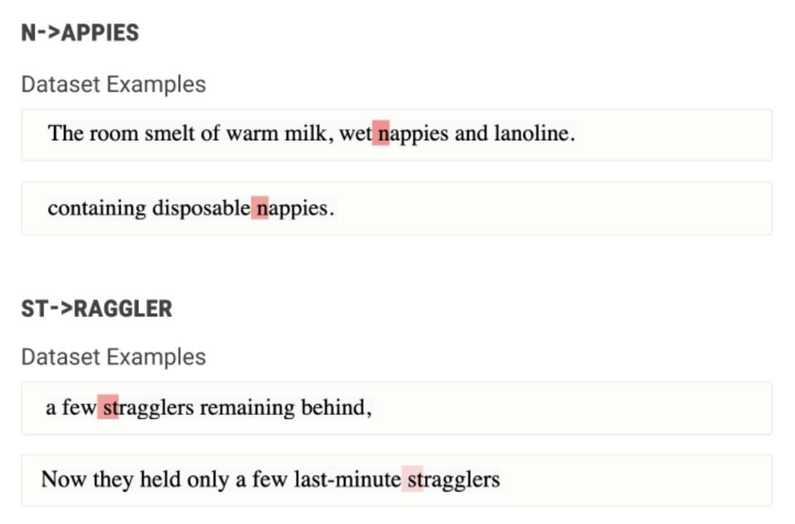

TODO ArXiv
Preprint
TODO Source Code
How do LLMs Represent Words?
In current LLMs, the meaning of a word often has nothing to do with its constituent tokens.
For example, the word "northeastern" might be tokenized as "n," "ort," "he," "astern," without any reference to
the concepts of "north" or "east." Regardless, LLMs still seem to understand the meaning of these tokens put together.

What do We Mean by "Word-Like Representations"?
In this work, our goal is to understand the lexical items that make up an LLM's implicit vocabulary. A lexical item is simply any item that "functions as a single unit of meaning" (Simpson, 2011). This could be a word like "antihero," a named entity like "Neil Young" or "Lake Louise," or a potentially idiomatic expression like "break a leg."
One key observation about these sequences is that they are low in compositionality; that is, the overall meaning of the phrase “break a leg” cannot be directly inferred from the meanings of the words "break" and "leg." The same goes for multi-token words like "northeastern," where the tokens that make up that word do not directly contribute to the overall meaning of the word.
Token-Level Erasure
Previous work shows that in autoregressive models, models tend to store information about multi-token entities at the last token position (e.g. "Wars" in "Star Wars"). If these last hidden states are representative of the tokens that preceded them, do they actually encode information about those tokens? Does "Wars" store some representation of the word "Star"?
We train linear probes to take a hidden state at position t and predict the previous token at a certain layer. For example, one probe might be trained to predict the previous token (i=-1) from a hidden state at layer 3, while another would be trained to predict three tokens before (i=-3) hidden states at layer 12. We find the opposite of what we expected: these particular hidden states exhibit a pronounced "erasing" effect, wherein information about previous tokens (as well as the current token) becomes less recoverable around layer 10. We even find that this "erasure" also occurs for multi-token words like "intermittent," suggesting that it may be connected to how models process multi-token lexical items.

What Words Does Llama Know?
Next, we develop a method to recover other token sequences that have the same "erasure" effect in Section 4. We use this method to generate a list of possible implicit vocabulary entries for Llama-2-7b and Llama-3-8b based on Pile and Wikipedia datasets, which can be found in Appendix E of our paper. In the example Wikipedia article below, we can see that although recall for multi-token words is low, our "erasing score" (shown in blue) seems to precisely mark sequences that are plausible implicit vocabulary items.
<s> Monk' s compos itions and impro vis ations feature dis son ances and angular melodic twists , often using flat ninths, flat fifth s, unexpected chrom atic notes together, low bass notes and stride , and fast whole tone runs , combining a highly per cuss ive attack with ab rupt , dramatic use of switched key releases , silences , and hes itations .
<s> Q :
Model - View - Controller in JavaScript
tl;dr: How does one implement MVC in JavaScript in a clean way ?
I ' m trying to implement MVC in JavaScript . I have goog led and reorganized with my code countless times but have not found a suitable solution. (The code just doesn't "feel right ". )
Here ' s how I' m going about it right now . It ' s incredibly complicated and is a pain to work with (but still better than the pile of code I had before ). It has ugly workarounds that sort of defeat the purpose of MVC .
And beh old, the mess , if you' re really brave:
// Create a "main model"
var main = Model0 ();
function Model0() {
// Create an associated
Related Work
Our work builds upon insights from other papers:
Kevin Meng, David Bau, Alex Andonian, Yonatan Belinkov. Locating and Editing Factual Associations in GPT. 2022.
Notes: In their causal tracing experiments, the authors discover the importance of the last subject token when it comes to encoding factual information.
This finding is what inspired us to probe these representations in this work.
Mor Geva, Jasmijn Bastings, Katja Filippova, Amir Globerson. Dissecting Recall of Factual Associations in Auto-Regressive Language Models. 2023.
Notes: The authors describe a subject enrichment stage at the last token position of CounterFact entities in early layers, and discover how that information is carried over through relation propagation and attribute extraction.
The previous token erasure that we observe roughly co-occurs with this subject enrichment stage.
 Nelson Elhage, Tristan Hume, Catherine Olsson, Neel Nanda, ... Christopher Olah. Softmax Linear Units. 2022.
Notes: When studying individual neuron behavior in specially-constructed models, the authors find evidence of detokenization and retokenization neurons in early and late layers respectively.
The detokenization neurons that they find fire on what we consider lexical items in this paper (multi-token words, named entities, LaTeX expressions).
How to cite
This work is currently under review. It can be cited as follows:
bibliography
Sheridan Feucht, David Atkinson, Byron Wallace, and David Bau."Token Erasure as a Footprint of Implicit Vocabulary Items in LLMs." Preprint, arXiv:TODO (2023).
bibtex
@article{feucht2024footprints,
title={Token Erasure as a Footprint of Implicit Vocabulary Items in LLMs},
author={Feucht, Sheridan and Atkinson, David and Wallace, Byron and Bau, David},
journal={ArXiv},
year={2024},
volume={abs/TODO},
url={TODO}
}